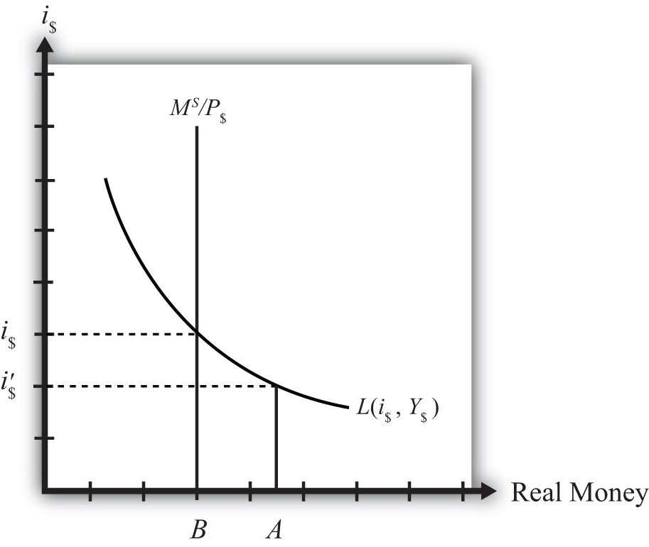

Any equilibrium in economics has an associated behavioral story to explain the forces that will move the endogenous variable to the equilibrium value. In the money market model, the endogenous variable is the interest rate. This is the variable that will change to achieve the equilibrium. Variables that do not change in the adjustment to the equilibrium are the exogenous variables. In this model, the exogenous variables are P$, Y$, and M$S. Changes in the exogenous variables are necessary to cause an adjustment to a new equilibrium. However, in telling an equilibrium story, it is typical to simply assume that the endogenous variable is not at the equilibrium (for some unstated reason) and then to explain how and why the variable will adjust to the equilibrium value.
Suppose that for some reason the actual interest rate, i′$ lies below the equilibrium interest rate (i$) as shown in Figure 18.2 "Adjustment to Equilibrium: Interest Rate Too Low". At i′$, real money demand is given by the value A along the horizontal axis, while real money supply is given by the value B. Since A is to the right of B, real demand for money exceeds the real money supply. This means that people and businesses wish to hold more assets in a liquid, spendable form rather than holding assets in a less liquid form, such as in a savings account. This excess demand for money will cause households and businesses to convert assets from less liquid accounts into checking accounts or cash in their pockets. A typical transaction would involve a person who withdraws money from a savings account to hold cash in his wallet.
Figure 18.2 Adjustment to Equilibrium: Interest Rate Too Low
The savings account balance is not considered a part of the M1 money supply; however, the currency the person puts into his wallet is a part of the money supply. Millions of conversions such as this will be the behavioral response to an interest rate that is below equilibrium. As a result, the financial sector will experience a decrease in time deposit balances, which in turn will reduce their capacity to make loans. In other words, withdrawals from savings and other type of nonmoney accounts will reduce the total pool of funds available to be loaned by the financial sector. With fewer funds to lend and the same demand for loans, banks will respond by raising interest rates. Higher interest rates will reduce the demand for loans helping to equalize supply and demand for loans. Finally, as interest rates rise, money demand falls until it equalizes with the actual money supply. Through this mechanism average interest rates will rise, whenever money demand exceeds money supply.
If the actual interest rate is higher than the equilibrium rate, for some unspecified reason, then the opposite adjustment will occur. In this case, real money supply will exceed real money demand, meaning that the amount of assets or wealth people and businesses are holding in a liquid, spendable form is greater than the amount they would like to hold. The behavioral response would be to convert assets from money into interest-bearing nonmoney deposits. A typical transaction would be if a person deposits some of the cash in his wallet into his savings account. This transaction would reduce money holdings since currency in circulation is reduced, but will increase the amount of funds available to loan out by the banks. The increase in loanable funds, in the face of constant demand for loans, will inspire banks to lower interest rates to stimulate the demand for loans. However, as interest rates fall, the demand for money will rise until it equalizes again with money supply. Through this mechanism average interest rates will fall whenever money supply exceeds money demand.
Jeopardy Questions. As in the popular television game show, you are given an answer to a question and you must respond with the question. For example, if the answer is “a tax on imports,” then the correct question is “What is a tariff?”